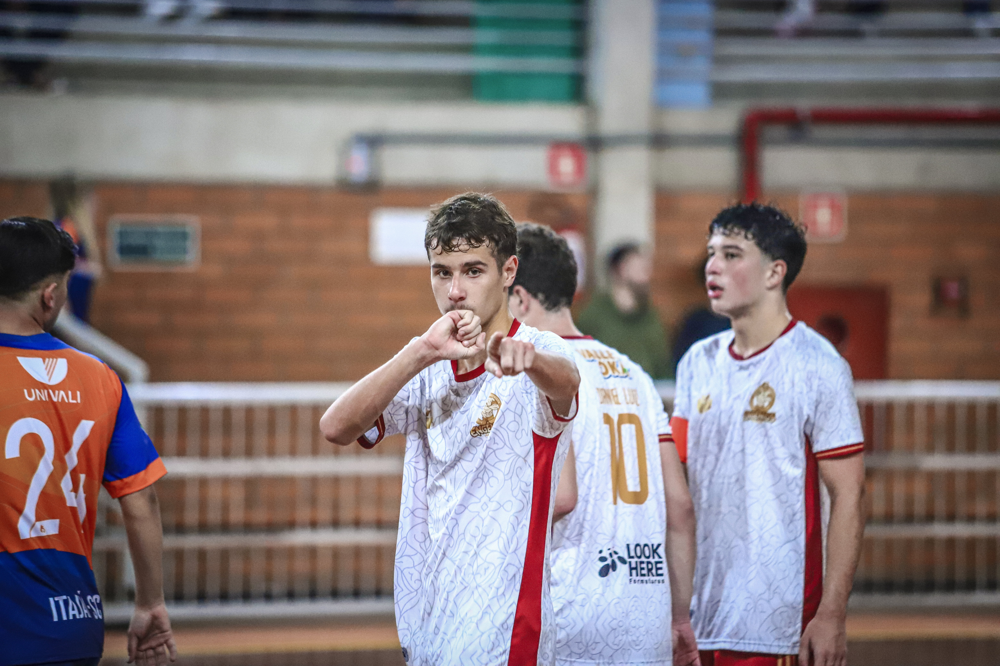

Existe um detalhe escondido nesta fotografia.
Toque onde você acha que está meu coração.
Todo mundo olhou para o gol. A torcida levantou ao mesmo tempo. Meus companheiros correram na minha direção. O ginásio explodiu em gritos. O placar mudou. Os narradores provavelmente falaram sobre a jogada. As pessoas comemoravam porque, para elas, aquilo significava apenas mais um ponto. Mas ninguém ali fazia ideia do que realmente estava acontecendo. Enquanto todos enxergavam um simples gol, existia uma história inteira escondida naquele instante. Eu estava longe de casa. Longe da minha rotina. E, principalmente... longe de você. A saudade já não cabia mais dentro de mim. Ela aparecia nos momentos mais inesperados. Durante a viagem. No aquecimento. Entre uma partida e outra. E até mesmo quando tudo o que eu deveria pensar era apenas no jogo. O ginásio estava completamente tomado pelo barulho. Pessoas gritavam. Apitos ecoavam. A bola batia na quadra. Mas, por mais estranho que pareça... dentro de mim existia apenas silêncio. Porque, em meio a centenas de pessoas, havia apenas uma cuja presença realmente fazia falta.
Quando a bola entrou... o tempo fez exatamente aquilo que eu sempre achei impossível. Ele parou. Não porque o campeonato era importante. Não porque aquele gol decidiria alguma coisa. Mas porque, naquele segundo, eu finalmente encontrei uma forma de diminuir um pouco a distância que existia entre nós.
Enquanto todos comemoravam olhando para o placar... eu pensava em você. Enquanto meus amigos corriam para me abraçar... eu lembrava do abraço que realmente queria. Enquanto diziam que aquele era o melhor momento da partida... eu só conseguia imaginar como seria muito melhor se você estivesse ali.
Foi então que, quase sem pensar... minha mão encontrou a aliança. Não foi uma comemoração ensaiada. Não foi para aparecer. Não foi para as câmeras. Foi apenas o jeito mais sincero que encontrei de dizer, mesmo a quilômetros de distância: "Eu estou pensando em você."
O fotógrafo fez exatamente o trabalho dele. Ajustou a câmera. Calculou a velocidade. Esperou o momento perfeito. Apertou o disparador. Para ele... aquela era apenas uma fotografia esportiva.
Mas existe uma coisa curiosa sobre as fotografias. Elas registram muito mais do que a própria câmera consegue entender. Sem querer... ele congelou um sentimento. Congelou um instante em que a saudade falou mais alto do que qualquer comemoração. Congelou o exato momento em que um beijo em uma pequena aliança dizia muito mais do que qualquer legenda conseguiria explicar.
Sempre que olho para essa imagem... eu não vejo um atleta comemorando. Eu vejo alguém tentando fazer com que uma pessoa especial sentisse, mesmo de longe, que nunca deixou de estar presente naquele momento.
Talvez ninguém tenha percebido. Talvez todos tenham pensado que era apenas um gesto qualquer. E tudo bem. Porque algumas demonstrações de amor não precisam ser compreendidas pelo mundo inteiro. Basta que uma única pessoa entenda.
Naquele ginásio havia centenas de pessoas. Companheiros. Adversários. Árbitros. Torcedores. Fotógrafos. Mas, por alguns segundos... todos desapareceram. Restou apenas a imagem que eu fazia de você dentro da minha cabeça.
A distância dizia que você estava em outra cidade. A saudade dizia exatamente o contrário. Porque, mesmo sem estar ali fisicamente... você era a única pessoa que ocupava todos os meus pensamentos naquele instante.
Hoje essa fotografia continua existindo. Algumas pessoas enxergam um gol. Outras enxergam uma comemoração. Eu enxergo muito mais do que isso. Eu enxergo uma saudade que encontrou um jeito de atravessar quilômetros. Um beijo que nunca foi para uma aliança. Sempre foi para você.